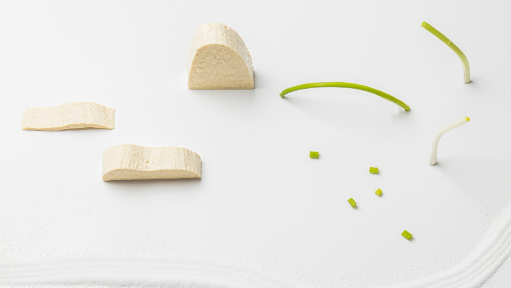

Здоровий веганський раціон: основи
Зміна типу харчування — відповідальний крок. Чи стане веганство найкращим рішенням у вашому житті, чи розчарує вас, залежить від того, наскільки добре ви розберетеся в основах.
Якщо ви хочете зберегти та зміцнити здоров’я після відмови від тваринних продуктів, а не отримати гормональний збій і випадіння волосся через пів року — ця інструкція для вас.
Крок 1: увага на білки та жири
Рослинна їжа — вуглеводна, тому важливо уникнути спокуси впасти у "вуглеводну яму". Білки та жири, принаймні на початку, слід рахувати.
Норма білків — 1 г на кг ваги, тобто при вазі 60 кг потрібно споживати щодня не менше 60 г білка. Найкращі джерела: бобові та цільнозернові крупи. Не вдається досягти норми білка з їжею? Підключайте протеїн у добавках.
Жири рахуємо також із розрахунку ~1 г на кг ваги. Олії, навіть нерафіновані, зводимо до мінімуму та замінюємо цільними джерелами жирів — горіхами, насінням і авокадо. У них, окрім жирів, є також білок, клітковина, вітаміни та мінерали.
Вміст білків і жирів у продуктах відслідковуємо за допомогою додатків: Cronometer, FatSecret.
Коли ви забезпечили організм білками та жирами, можна додати фрукти, сухофрукти та інші вуглеводи. Цей крок перший не даремно: від того, наскільки відповідально ви підійдете до білків і жирів у раціоні, залежить не лише ваше здоров’я, а й харчова поведінка. Мало білка та жирів = зриви та "вовчий голод".
Крок 2: залізо та кальцій

Ці два елементи першими зменшаться, якщо не планувати раціон грамотно. Додаємо щоденно бобові, чорний кунжут, чіа, збагачене рослинне молоко, темно-зелене листя.
Пам’ятайте, що залізо й кальцій схильні до впливу фітинової кислоти. Ця речовина міститься в усіх крупах, бобових, горіхах і насінні — вона "зв’язує" мінеральні речовини й знижує їх біодоступність. Щоб отримати максимум користі, замочуйте згадані продукти у чистій воді хоча б на ніч — це активує фермент фітазу, яка розщеплює фітинову кислоту та покращує засвоєння корисних речовин.
Не варто пити каву після їжі, багатої на залізо — кофеїн також знижує його засвоєння з рослинних продуктів. Відмовлятися від кави не потрібно, але витримувати паузу 2–3 години варто.
Добова норма кальцію — 1000 мг, заліза — 18 мг для жінок і 8 мг для чоловіків.
Крок 3: додаємо добавки

Погані новини: зовсім без добавок на веганському харчуванні не обійтися. Просто тому, що в рослинних продуктах немає вітамінів В12 і D — їх можна отримати тільки з тваринних продуктів, зокрема м’яса та жирної риби.
Хороші новини: грамотне використання добавок на рослинному харчуванні не тільки безпечне, а й офіційно рекомендоване.
План-мінімум — уже згадані вітаміни В12 і D, які необхідні кожному, хто не вживає тваринні продукти. Перед початком прийому будь-яких добавок слід здати аналізи та оцінити статус кожної конкретної речовини у вашому організмі — без цього неможливо ані підібрати адекватне дозування, ані відстежити динаміку.
Пам’ятайте, що 99% БАДів не мають доказаної ефективності, не є безпечними та не рекомендовані жодною організацією охорони здоров’я у світі. До них належать спіруліна, мака перуанська, соняшниковий лецитин та інші широко розрекламовані хіти БАД-чартів за версією жіночих блогерів.